Resource:Aspect
From Nexus RP: Wiki
Introduction
A/D Aspect it's a Attack/Defend type of game mode, was created for professional clan matches with attention to clean game and playinign with rules.
It's based on BaseMode ( my previous project ), but with coincidence of time almost completely been changed to other gamemode, in comparison with basemode source code differs in more than 90%.
It is very well optimized and programmed for the latest versions of the Nexus RP.
Features
- expanded configuration panel,
- restore feature ( with saving position, weapons, vehicles, health etc ) available as /restore command ( only in match mode ),
- detection modified files in gta3.img ( with the exception of weapons textures and weapons models resembling in size to original models ),
- kicks for ping, fps and packet loss abousing,
- info box with important information,
- match feature ( uniform settings of weapons and vehicles, addition features available only in this mode) available as /startmatch [base/tdm] [rouds] command,
- client panel ( with client settings and key binds ),
- globally client statistics saved on clients disk,
- auto pause feature ( auto pause when player got time out durring match ) available in match mode,
- map viewer available as /view command,
- vote for maps available as /vote [base/arena] command.
- preview of commands usage of players visible on chat ( only in match mode),
- preview of started resources visible on chat ( only in match mode),
- detection of fake times outs ( only in match mode),
- expanded teams, weapons, vehiles, and spawns selectors,
- expanded spectator,
- anti helli-kill and car kill available as settings in configuration panel,
- built-in scripts 'reload' and 'injury',
- possibility to do screenshot from game to each player on server available as /screen command,
- report system for reporting issues available as /report
- call help system default available as H key,
- and many more minor features,
Official Rules
- Rules from 31/01/2012
- Failure to rules threatens ban on gamemode ( applies to individual players and also clans ).
Generaly:
- 1. To begin the match it is necessary to use the command /startmatch [base/tdm] [rounds]. Otherwise, the match isn't officially valid.
- 2. Using any type of cheats, bugs, game boosters, mods helping you in gameplay is not allowed.
- 3. Limits:
- - minimum fps 25,
- - minimum packet loss 0.05,
- - maximum ping:
- a) globally - 400 ( players from different countries far apart from each other ).
- b) locally - 150 ( players from the same country or neighbouring countries).
- 4. Inflating pings / decreasing fps is not allowed.
- 5. Heli boom - allowed ( the script changes an explosion into the same as car's one ).
- 6. Exploding grenade which deals damage through a wall, isn't classified as a bug!
Game:
A/D ( Bases ):
- 1. Gameplay variants: 7 rounds ( 6 bases, 1 tdm ), 9 rounds ( 8 bases, 1 tdm ).
- 2. The bases are chosen automatically by an algorithm which generates a random base. In order for this to occur, just type the command /base.
- 3. Car rush is allowed on all kind of bases.
- 4. Only arena 2 is played as tdm.
- 5. FPS Limit 45.
- 6. Allowed kind of crouch bug: 'alternative' and 'default'.
- 7. The team wins through:
- - Bases:
- capturing the marker ( Attack ),
- killing all enemy team ( both ),
- end of time and base has not been captured ( Defence ),
- - Arena:
- killing all enemy team
- end of time and when:
- a) they have more people alive than enemy,
- b) when there is the same number of players, team who has more health point wins the round,
- c) tie when both of teams have the same number of players and health point.
TDM:
- existing rules on Russian League and etc :D
Command list
- /pm [id] - private message
- /arena [id] - for starting arenas
- /base [id] - for starting bases
- /end - for ending the round
- /add [id] - for adding the player to round
- /resetscore - restart all players and teams score
- /gunmenu [id] - for giving the gunmenu for the player
- /remove [id] - for removing the player from the round
- /screen id quaility(0-100) [taq] [width] [height] - for doing screenshot for the player
- /vote [base/arena] [id/ids] - for start the voting
- /car [id] - for get the vehicle in main lobby
- /clean - for restart the rounds history
- /pause - for pausing/repausing the round
- /swap - for change the teams sides
- /tp [id1] [id2] - for teleport the player1 to the player2
- /heal [id] - for heal the player
- /healall - for heal all players
- /startmatch [base/tdm] [rounds] - for starting the match
- /endmatch - for ending the match
- /gun - re weapon select
- /rsp - for re-sync
- /view - for viewing the maps
Default binds
- F1 - configuration panel
- F3 - client panel
- F4 - re-select team
- H - call help
- R - Realod the weapon
To run:
After downloading change the resource name from 'aspect' to 'Aspect'
if you can't change settings in admin panel, save the settings as other confing ( use other confing name )
- update server and client to 1.3
- Necessary entries in:
- acl.xml
- <object name="resource.Aspect"></object> in <group name="Admin">
- nrpserver.conf
- <enablesd>12</enablesd>
- blank disableac ( <disableac></disableac> )
- <verifyclientsettings>-1</verifyclientsettings>
- REMOVE ALL LINES OF "client_file"
- acl.xml
Gallery
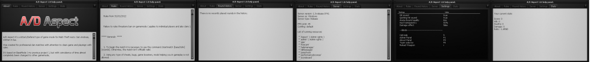  Client Panel
Client Panel
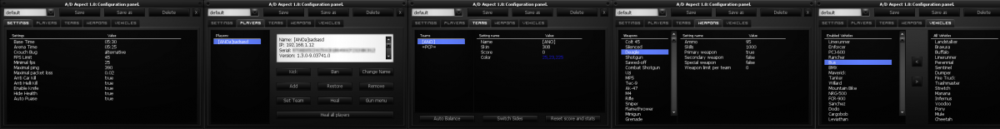 Admin Panel
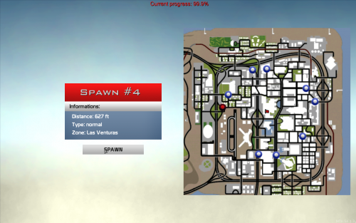 Attack spawn selector
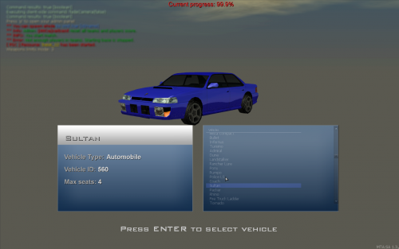 Vehicles selector
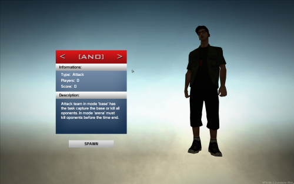 Team Selector #Attack
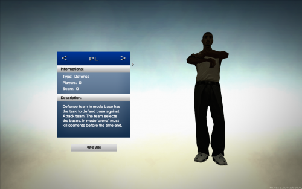 Team Selector #Defense
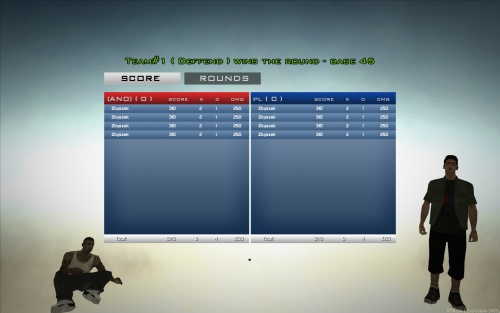 Example of final results#1
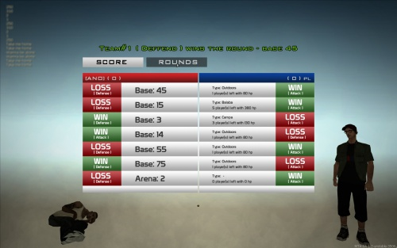 Example of final results#2
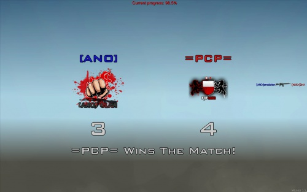 Example of final results#3
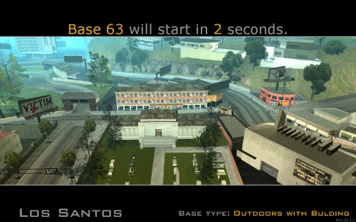 Starting a base
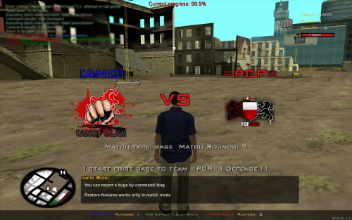 Starting a match & info box